Dörtgenler:
Bu ders notumuzda önemli konularımızdan biri olan dörtgenler, dörtgenlerin genel özellikleri, dörtgenler ile ilgili alan ve uzunluk hesaplamaları ile ilgili bilgileri bulabilirsiniz.
DÖRTGENLERİN GENEL ÖZELLİKLERİ
| 1.Bir dörtgende komşu iki iç açının açıortaylarının oluşturduğu açının ölçüsü, diğer iki açının ölçüleri toplamının yarısına eşittir.
|
 |
| 2.Bir dörtgende karşı iki açının açıortayları arasındaki dar açının ölçüsü diğer iki açının ölçüleri farkının mutlak değerinin yarısına eşittir.
|
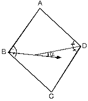 |
| 3.Köşegenleri ve köşegenlerinin arasındaki açısının ölçüsübilinen dörtgenin alanı; ABCD dörtgeninde [AC] ve [BD] köşegen uzunlukları ile a biliniyor
|
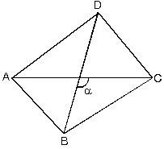 |
- Köşegenleri birbirine dik olan dörtgenlerde
- (sin 90° = 1 olduğundan)
|
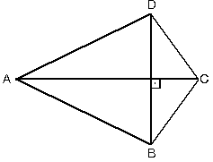 |
- Köşegen doğruları birbirine dik ise
|
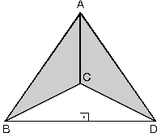 |
| 4. Köşegenleri ve köşegenlerinin arasındaki açısının ölçüsü bilinen içbükey dörtgenin alanı;[AC] ve [BD] köşegenleri ile köşegen doğruları arasındaki a biliniyor ise ABCD içbükey dörtgeninin alanı;
|
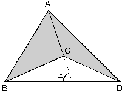 |
5. Köşegenleri dik kesişen dörtgenlerin kenarları arasındaki bağıntı; ABCD dörtgeninde
[AC] ^ [BD] |
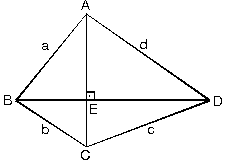 |
Köşegenleri dik olan dörtgenlerin karşılıklı kenarlarının kareleri toplamı eşittir.
- Köşegenleri dik içbükey dörtgenlerde de karşılıklı kenarların kareleri toplamı eşittir.
ABCD dörtgeninde
|
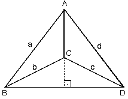 |
| 6. Dörtgenlerde köşegenlerin ayırdığı alanlar; ABE ve ADE üçgenlerinin yükseklikleri eşit olduğundan alanlarının oranı tabanlarının oranına eşittir. |
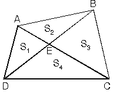 |
| 7. Dörtgenlerde kenarların orta noktalarının birleştirilmesiyle oluşan paralelkenar; ABCD dörtgeninde kenarların orta noktaları birleştirilerek oluşan KLMN dörtgeni paralelkenardır. Paralelkenarın alanı dörtgenin alanının yarısına eşittir.[KL] // [BD] // [MN] ve |KL| = |MN| = 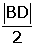 [LM] // [AC] // [KN] ve |LM| = |KN| =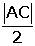 |
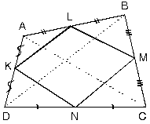 |
- Köşegenleri dik kesişen dörtgenlerde, kenarların orta noktaları birleştirilerek elde edilen dörtgen, dikdörtgendir.
| [AC] ^ [BD] ve K, L, M, N kenarların orta noktaları ise KLMN dikdörtgendir. |